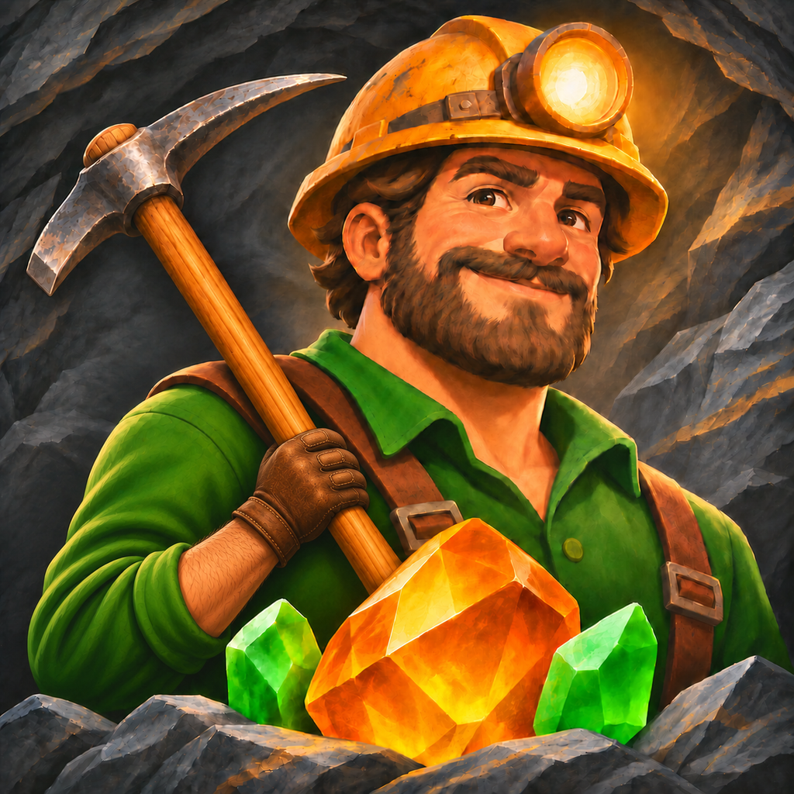

01 · Learn the branching rule
Amber Arch
Level 15 · 27 seconds
Three gold gems. Rocks in the way. Watch a complete solution that branches from crystals already connected.
Open clip separately
Crystal BranchPath PuzzlesGameplay showcase
300 puzzles · iPhone & iPad
Grow from any connected crystal. Find a route to every gold gem before your moves run out.
01 · Learn the branching rule
Level 15 · 27 seconds
Three gold gems. Rocks in the way. Watch a complete solution that branches from crystals already connected.
Open clip separately02 · See how the planning grows
Level 233 · 18 seconds
Five gold gems in a 20-move puzzle. A lever, rails and a marked diagonal make the route worth planning.
Open clip separatelyBoth clips include game sound and show the solution. Use the player’s full-screen control for a closer look.
From the mine office
All 300 puzzles are playable for free. Later boards introduce levers, gates, one-way rails and marked diagonals. Gem Cart, Gem Vein Dig and Rocker Box bonuses offer a mining break along the way.
Includes ads. Optional purchases: 50 Gems for $0.99, 180 Gems for $2.99, and Remove Ads for $4.99/month. Remove Ads renews automatically until canceled and removes automatic ad breaks while active. U.S. prices.
“I’m Matthew Roberts, and Crystal Branch is my first app. My wife and I tested the game together on iPhone. Our feedback helped shape clearer hints, larger controls, harder later puzzles and sound recovery.”
Matthew Roberts
Both clips use real gameplay from the preserved campaign. The early example was recorded in an iOS simulator, with existing game music and effects matched in the edit; its completed board is held briefly so the result is readable. The advanced example uses Matthew’s iPhone 16 Pro recording and original game audio.
These are edited excerpts from earlier recordings, not new Build 36 captures. No gameplay action has been sped up or fabricated.
Pre-release preview · Submitted to Apple for review as of November 17, 2026. Initial U.S. release planned for iPhone and iPad.